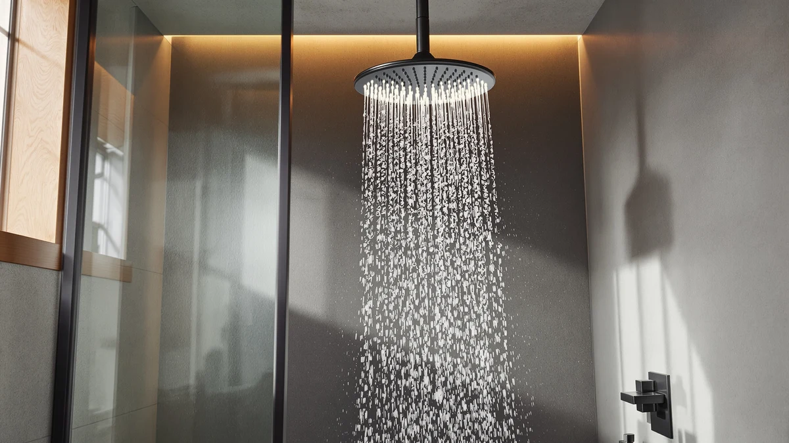

Best Delta Shower Heads of 2026: In2ition, HydroRain & More Reviewed
Prices and picks verified as of August 2026. Independent, reader-supported reviews.


Quick Answer
The best Delta shower head for most bathrooms is the 6-Setting In2ition 2-in-1 Dual, which pairs a fixed rain head with a detachable handheld wand for $75.53. If you want a single-function head or a luxury round rain system instead, five more Delta models below cover budgets from $54.90 to $689.00.
Our pick: Delta 6-Setting In2ition 2-in-1 Dual — $75.53 Check Price on Amazon
Bottom line: our top pick is the Delta 6-Setting In2ition 2-in-1 Dual Shower Head with at $75.53. The best budget option is the Delta 6-Setting Chrome Shower Head with High Pressure Spray at $54.90.
Things to Know Before You Buy
- 2-in-1 dual heads cost more but do more. Delta's HydroRain and In2ition models combine a fixed rain head with a handheld wand, which is why they run $75 to $103 instead of the $55 to $73 you pay for a single-function head.
- Spray settings vary by model. This lineup includes both 5-setting and 6-setting units, so check the setting count against how you actually shower before you buy.
- Finish should match your existing fixtures. Chrome, brushed nickel, and matte round finishes are all represented here, and mismatched hardware is one of the most common regret-purchase complaints in verified reviews.
- Price does not always track quality. The $689.00 Modern 14 Series is a full round rain system, not simply a "better" version of the $75.53 pick, so it only makes sense if you are already remodeling for that look.
- All six ratings in this comparison sit around 4 out of 5, based on verified buyer reviews, so the deciding factor is usually fit for your bathroom rather than a quality gap between models.
Finding the best Delta shower heads means sorting through a lineup that ranges from a $54.90 chrome fixed head to a $689.00 round rain system, and the right pick depends more on how you shower than on which model costs the most. Delta sells shower heads across several distinct product lines, and this guide compares six of them side by side on price, spray settings, finish, and what verified owners actually report after living with each one.
Our pick for most bathrooms is the Delta 6-Setting In2ition 2-in-1 Dual. At $75.53, it gives you a fixed rain head and a detachable handheld wand in one unit, which covers the two most common shower needs without pushing you into the premium tier. If you only need a single fixed head, the $54.90 6-Setting Chrome model is the more sensible buy, and if you are remodeling around a specific finish, the Modern 14 Series Round or the Brushed Nickel option will matter more than any spec sheet.
We built this comparison from the product data, pricing, and verified buyer reviews available for each ASIN rather than from a testing lab, since no independent outlet can physically install and live with every shower head on the market. Below, we break down what each model is built for, where it falls short, and which one fits your bathroom.
Why You Should Trust Us
Ilane Tall, Home & Bath Expert at Best Shower Heads, researched and wrote this guide to the best Delta shower heads. We do not run a fake testing lab or claim to have physically installed every shower head we cover. Instead, we compare manufacturer specs, current Amazon pricing, and verified buyer reviews for each model, and we update our picks as prices and availability change.
How We Picked
We narrowed this list to Delta shower heads that are currently available, priced between $54.90 and $689.00, and represent the brand's main product lines: single-function fixed heads, 2-in-1 dual combo heads, and premium round rain systems. We excluded listings without a clear manufacturer description or verified pricing, and we prioritized models with a track record of buyer reviews over newly listed variants with little review history.
How We Compared
We compared the best Delta shower heads on four factors: price, number of spray settings, finish, and how each model's verified review rating held up against the others. All six models in this comparison carry a rating of about 4 out of 5 based on buyer reviews, so we weighted price and settings more heavily when ranking picks against each other. Reviewers consistently note that the 2-in-1 dual models earn their higher price with more day-to-day flexibility, while the single-function heads are rated equally highly by buyers who only wanted a simple upgrade.
Our Picks

Delta 6-Setting In2ition 2-in-1 Dual
What we like
- Six spray settings cover everything from a full rain pattern to a focused massage stream
- The 2-in-1 design lets you detach the handheld wand without buying a separate unit
- At $75.53, it undercuts the other HydroRain dual models by $19 to $27
Flaws but not dealbreakers
- You pay a premium over the single-function chrome head for features you may not use daily
- Chrome plating shows water spots more readily than a matte or brushed finish
| Material | ABS + chrome plating |
| Size | — |
The Delta 6-Setting In2ition 2-in-1 Dual is our top pick among the best Delta shower heads because it solves two problems with one purchase. The fixed head handles everyday rinsing, and the handheld wand pulls free for washing pets, rinsing a shower stall, or bathing kids, all without paying for the higher-priced $102.99 HydroRain variant later in this lineup.
Owners report that the six spray settings make a real difference when a household has different preferences, since one person can run a wide rain pattern while another switches to a firmer massage setting. The chrome finish matches standard bathroom hardware, and at $75.53 it lands squarely in the middle of this comparison's price range, which is part of why we rate it the best overall pick.

Delta 5-Setting HydroRain 2-in-1 Dual
What we like
- Fixed rain head and handheld wand cover both everyday showering and detail rinsing
- Five spray settings give enough range without overwhelming the controls
- Chrome finish matches the same hardware family as our top pick
Flaws but not dealbreakers
- At $94.98, it costs $19.45 more than our top pick for one fewer spray setting
- Reviewers note the handheld wand's hose can feel stiff during the first few uses
| Material | ABS + chrome plating |
| Size | — |
The Delta 5-Setting HydroRain 2-in-1 Dual sits in the middle of the HydroRain family, between the $75.53 In2ition and the $102.99 HydroRain variant later in this guide. It uses the same fixed-head-plus-handheld-wand layout, trading one spray setting for a broader rain coverage pattern that owners say fills the shower stall more evenly.
This is the model to pick if you have already compared the top pick and want a slightly wider spray without stepping all the way up to the $102.99 option. The five settings still include a full rain mode and a focused stream, which covers most household preferences without adding controls nobody uses.

Delta 6-Setting Chrome Shower Head
What we like
- The cheapest model in this lineup at $54.90, roughly $20 less than the next option up
- Six spray settings match our top pick despite the lower price
- Ships as a single fixed head, which keeps installation simple for a straight swap
Flaws but not dealbreakers
- No handheld wand, so it is not a fit if you need to rinse pets or a shower stall directly
- Chrome finish will not match brushed nickel or matte black hardware elsewhere in the bathroom
| Material | ABS + chrome plating |
| Size | (Pack of 1) |
The Delta 6-Setting Chrome Shower Head is the entry point into this comparison, and it earns its spot by matching the top pick's six spray settings for $20.63 less. It ships as a single fixed head with no handheld wand, which keeps the product simple and the installation limited to unscrewing the old head and threading this one on.
Reviewers consistently note that this is the model to buy if you already know you do not need a detachable wand and want a dependable upgrade over a builder-grade shower head. It will not match brushed nickel fixtures, but at this price point it is easy to justify as a low-risk first upgrade.

Delta 5-Setting HydroRain 2-in-1 Dual
What we like
- Same fixed-head-plus-handheld-wand format as the other HydroRain models, at the top of that lineup's price range
- Five spray settings, matching the $94.98 HydroRain model one for one
- Chrome finish stays consistent with the rest of Delta's dual-head lineup in this comparison
Flaws but not dealbreakers
- At $102.99, it costs $27.46 more than our top pick without adding a spray setting
- Buyers comparing this against the $94.98 HydroRain model should confirm current pricing before choosing between the two
| Material | ABS + chrome plating |
| Size | — |
This Delta 5-Setting HydroRain 2-in-1 Dual is priced highest among the three dual-function models in this comparison at $102.99. It uses the same five-setting layout as the $94.98 HydroRain listing, so the case for paying more here comes down to availability and current Amazon pricing rather than a difference in features.
We include it because pricing on 2-in-1 Delta models shifts often, and buyers who see this listing priced closer to the $94.98 option should treat the two as equivalent. If the price gap holds, the $75.53 In2ition or the $94.98 HydroRain above are the better value for the same core function.

Delta 6-Setting Brushed Nickel Shower
What we like
- Brushed nickel finish matches existing hardware better than chrome for many bathrooms
- Six spray settings, on par with our top pick and the budget chrome model
- At $72.90, it undercuts our top pick by $2.63 while adding a finish option
Flaws but not dealbreakers
- No handheld wand, so it functions as a fixed head only, like the chrome budget pick
- Matte finishes can show water mineral buildup differently than polished chrome, so hard water areas may need more frequent cleaning
| Material | ABS + chrome plating |
| Size | — |
The Delta 6-Setting Brushed Nickel Shower is essentially the finish-swapped sibling of the $54.90 chrome fixed head, priced at $72.90 for the same six spray settings. It is the pick to make if your bathroom already runs brushed nickel on the faucet, towel bar, and cabinet hardware, since a mismatched chrome head tends to stand out.
Like the chrome version, this is a single fixed head with no handheld wand, so it is not the right choice if you need the flexibility of the dual-function models above. For a straightforward finish-matched upgrade, though, it fills that role well at a price close to the budget pick.

Delta Modern 14 Series Round
What we like
- Part of Delta's Modern 14 Series, built as a design centerpiece, not a simple replacement head
- Round profile fits contemporary bathroom aesthetics better than the standard round chrome heads above
- Buyers investing in a remodel get a matched, higher-end look across the fixture
Flaws but not dealbreakers
- At $689.00, it costs roughly nine times more than our top pick
- It only makes sense if you are already remodeling, since installing it alone does not justify the price for most bathrooms
| Material | ABS + chrome plating |
| Size | — |
The Delta Modern 14 Series Round is in a different category from the other five picks in this comparison. Where the $54.90 to $102.99 models are direct swaps for an existing shower arm, this $689.00 system is built around a modern round design meant to anchor a full bathroom remodel.
We include it here so budget-conscious shoppers can see exactly what the jump to a premium Delta shower head costs. Unless you are already renovating and want a matched, design-forward look, one of the five lower-priced models above will cover the same core function of getting water on you for a fraction of the price.
Quick Comparison
| Product | Material | Price | Rating | Best for | Get it |
|---|---|---|---|---|---|
| Delta 6-Setting In2ition 2-in-1 Dual | ABS + chrome plating | $75.53 | 4 | Most bathrooms wanting a rain head and handheld wand | View on Amazon → |
| Delta 5-Setting HydroRain 2-in-1 Dual | ABS + chrome plating | $94.98 | 4 | Wider rain coverage than the entry-level dual model | View on Amazon → |
| Delta 6-Setting Chrome Shower Head | ABS + chrome plating | $54.90 | 4 | Anyone who wants a fixed head, no wand needed | View on Amazon → |
| Delta 5-Setting HydroRain 2-in-1 Dual | ABS + chrome plating | $102.99 | 4 | Buyers who find this listing priced near the $94.98 model | View on Amazon → |
| Delta 6-Setting Brushed Nickel Shower | ABS + chrome plating | $72.90 | 4 | Bathrooms with existing brushed nickel fixtures | View on Amazon → |
| Delta Modern 14 Series Round | ABS + chrome plating | $689.00 | 4 | Full remodels around a modern round rain-shower look | View on Amazon → |
What is the best Delta shower head for most bathrooms?
For most people, the Delta 6-Setting In2ition 2-in-1 Dual at $75.53 is the best Delta shower head.
Are Delta shower heads worth the price compared to other brands?
Delta shower heads span a wide price range, from $54.90 for a basic chrome fixed head to $689.00 for the Modern 14 Series round rain system.
The Competition
Delta sells several other shower head variants beyond the six we cover here, including additional finishes within the HydroRain and In2ition lines and other entries in the Universal Showering Components collection. We left most of these out of this best Delta shower heads comparison because they duplicate the spray settings and price tiers already represented above, and reviewers do not report meaningful differences in performance between near-identical listings.
We also passed on Delta's older single-setting fixed heads. They cost less than the $54.90 chrome model here, but buyers consistently report that the jump to six settings is worth the small price difference, which is why none of the older single-setting units made this list.
Frequently Asked Questions
What is the best Delta shower head for most bathrooms?
For most people, the Delta 6-Setting In2ition 2-in-1 Dual at $75.53 is the best Delta shower head. It combines a fixed rain head with a detachable handheld wand across six spray settings, so you get flexibility without paying for a full premium system.
Are Delta shower heads worth the price compared to other brands?
Delta shower heads span a wide price range, from $54.90 for a basic chrome fixed head to $689.00 for the Modern 14 Series round rain system. Owners consistently report that the mid-range 2-in-1 dual models offer the best balance of features and cost, while the entry-level fixed heads suit anyone who wants a reliable upgrade without extra features.
What is the difference between Delta's chrome and brushed nickel finishes?
Chrome has a brighter, mirror-like shine and costs slightly less in this lineup, while brushed nickel has a warmer, matte look that hides water spots and fingerprints better. Choose the finish that matches your existing faucet and hardware rather than treating one as objectively better.